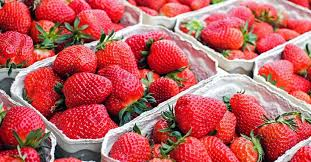
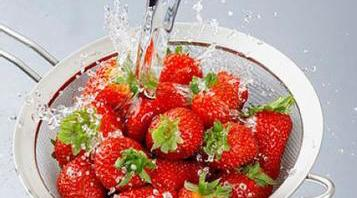
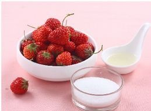
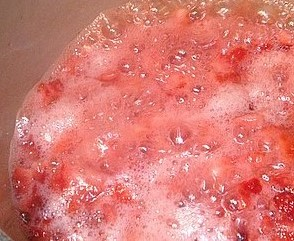
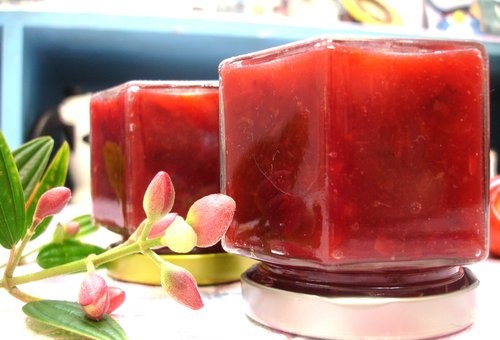

製作Making
過程 Process (草莓果醬為例)
1.摘採

選用苗栗大湖渾圓、鮮紅嬌豔的超甜大草莓並用低溫冷藏運送。
2.清洗

草莓裝在淡鹽水浸泡後，再用流動的水漂洗多次再瀝乾。
3.備料

草莓、檸檬洗淨切開後榨汁，放入冰糖，準備好後先放冰箱。
4.熬煮

草莓倒入鍋內，以小火煮至出水，轉中火煮至沸騰並濾網將澀汁去除。
5.殺菌

果醬瓶消毒是保存果醬的關鍵之一，使用沸水加烤箱消毒法。
6.裝瓶

裝入晾乾的玻璃瓶，蓋緊瓶蓋倒扣30分鐘，再放進冰箱的冷藏。